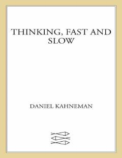

TFInson tafakkurining ikki tizimi va qaror qabul qilish mexanizmlari haqidagi mashhur asar.
Kitob inson ongining qanday ishlashi, shu jumladan tezkor, avtomatik tizim va sekin, ongli tizim haqida hikoya qiladi. Muallif qaror qabul qilish jarayonidagi xatolar, xolislik va xulq-atvor iqtisodiyoti asoslarini ilmiy dalillar bilan tushuntiradi.